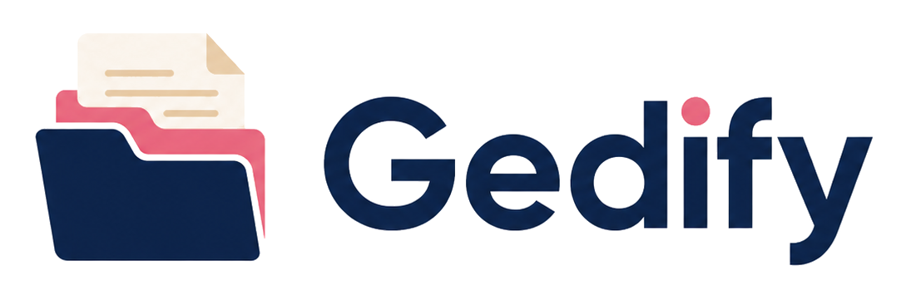

Charte graphique
Gedify
Une identité documentaire moderne, fiable et lisible : bleu nuit pour la confiance, rose pour l’action, beige pour la chaleur, violet pour l’intelligence artificielle.

Logo principal — à utiliser sur les écrans larges, en-têtes, documents de présentation et supports de marque.
01
Identité de marque
Gedify doit évoquer un espace documentaire sécurisé, intelligent, organisé et simple à utiliser.
02
Logos
Deux versions sont prévues : le logo complet et l’icône seule.
Logo complet
À privilégier dans les pages publiques, écrans de connexion, documents de présentation, signatures visuelles et supports marketing.
Icône seule
À utiliser pour favicon, rail de navigation, avatar d’application, raccourcis mobiles et petits espaces.
À faire
- Utiliser le logo complet sur fond clair.
- Préserver les proportions originales.
- Laisser une zone de respiration autour du logo.
- Utiliser l’icône seule uniquement en petit format.
À éviter
- Déformer ou étirer le logo.
- Changer les couleurs du logo.
- Ajouter une ombre forte ou un contour non prévu.
- Placer le logo sur un fond trop chargé.
03
Palette couleurs
Une palette courte et cohérente : bleu nuit, rose, beige clair, puis couleurs fonctionnelles.
Bleu nuit
#14233CTextes forts, logo, navigationRose Gedify
#F75C8DActions principalesRose doux
#FDECF2États actifs douxBeige papier
#F3E6D2Fonds chaleureuxFond global
#FCFAF7Fond de pageCarte
#FFFFFFSurfaces principalesViolet IA
#7C3AEDAnalyse IAValidation
#22C55ESuccès, validéDanger
#EF4444Supprimer, corbeilleAvertissement
#F59E0BÀ vérifier
04
Typographies
Gedify utilise Inter ou la police système pour une lisibilité maximale dans les tableaux, fiches et documents.
H1 — Tableau de bord Gedify
H2 — Documents récents
H3 — Fiche IA du document
H4 — Analyse et suggestions
H5 — Métadonnées
H6 — Informations secondaires
Paragraphe — Gedify organise vos documents, analyse automatiquement les contenus et facilite la validation des informations détectées.
body { font-family: Inter, system-ui, -apple-system, BlinkMacSystemFont, "Segoe UI", sans-serif; }
h1 { font-size: clamp(2.4rem, 4vw, 4rem); line-height: 1.05; font-weight: 800; }
h2 { font-size: clamp(2rem, 3vw, 3rem); line-height: 1.1; font-weight: 800; }
h3 { font-size: 1.5rem; line-height: 1.2; font-weight: 750; }
h4 { font-size: 1.25rem; line-height: 1.25; font-weight: 700; }
h5 { font-size: 1rem; line-height: 1.3; font-weight: 700; text-transform: uppercase; letter-spacing: .08em; }
h6 { font-size: .85rem; line-height: 1.35; font-weight: 700; text-transform: uppercase; letter-spacing: .12em; }
p { font-size: 1rem; line-height: 1.65; color: var(--text-secondary); }
05
Boutons
Les boutons doivent être immédiatement compréhensibles : bleu nuit pour structure, rose pour action, vert pour validation, violet pour IA, rouge pour danger.
.btn--navy { background: #14233C; color: #fff; }
.btn--primary { background: #F75C8D; color: #fff; }
.btn--validate { background: #22C55E; color: #fff; }
.btn--ai { background: linear-gradient(135deg, #7C3AED 0%, #F75C8D 100%); color: #fff; }
.btn--cancel { background: #fff; color: #5F6B7A; border: 1px solid #D8C7B5; }
.btn--danger { background: #EF4444; color: #fff; }
.btn--trash { background: #FDECEC; color: #B91C1C; border: 1px solid #F4B4B4; }
06
Composants UI
Exemples de badges, cartes et états utilisés dans l’application.
Document analysé
Correspondant · Type de document
OCR ✓
IA 91 %
Classé
États recommandés
Validé
À vérifier
En retard
Analyse IA
Brouillon
07
Variables CSS
Bloc prêt à intégrer dans le projet Gedify.
:root {
--gedify-navy: #14233C;
--gedify-pink: #F75C8D;
--gedify-pink-hover: #E84C7F;
--gedify-pink-soft: #FDECF2;
--gedify-beige: #F3E6D2;
--gedify-bg: #FCFAF7;
--card-bg: #FFFFFF;
--card-soft: #FFF9F4;
--text-main: #1F2937;
--text-secondary: #5F6B7A;
--text-muted: #8B95A7;
--text-inverted: #FFFFFF;
--border-soft: #E8DED1;
--border-strong: #D8C7B5;
--success: #22C55E;
--success-soft: #EAF8EF;
--warning: #F59E0B;
--warning-soft: #FFF4E5;
--danger: #EF4444;
--danger-soft: #FDECEC;
--info: #2563EB;
--info-soft: #ECF3FF;
--purple-ai: #7C3AED;
--purple-ai-soft: #F2ECFF;
--radius-sm: 10px;
--radius-md: 14px;
--radius-lg: 18px;
--radius-xl: 22px;
--radius-pill: 999px;
--shadow-soft: 0 8px 24px rgba(20, 35, 60, 0.08);
--shadow-card: 0 4px 14px rgba(20, 35, 60, 0.06);
}